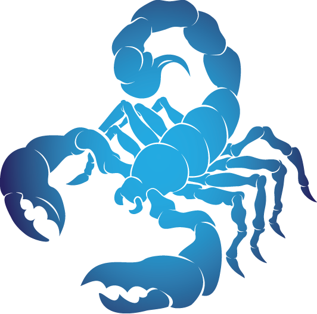
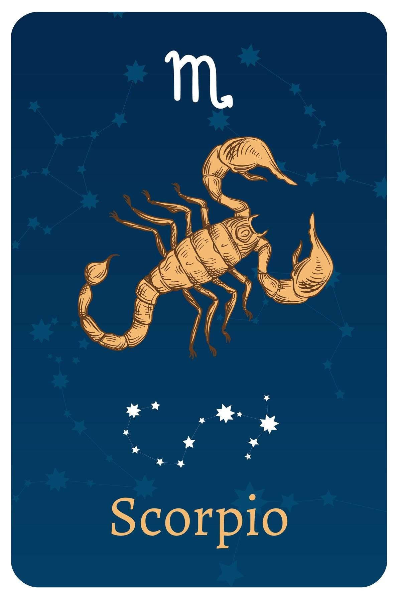

- Date Range : OCT 23 – NOV 21
- Element : Water
- Color : Black
- Quality : Fixed
- Day : Tuesuday
- Ruling planet : Pluto, Mars
- Ruling house : Eighth
- Lucky number : 8, 11, 18, 22
- Lucky gem : Citrine
- Top love Matches : Cancer
Scorpio ( OCT 23 – NOV 21)

Scorpio Personality Traits
Strengths :Resourceful, powerful, brave, passionate, a true friend
Weaknesses :Distrusting, jealous, manipulative, violent
Scorpio likes : Truth, facts, being right, talents, teasing, passion
Scorpio dislike :Dishonesty, revealing secrets, superficiality, small talk
Scorpios are known for their passionate and assertive nature with a level of determination and focus that is often unmatched by the other zodiac signs. They are known to delve deeply into research to uncover the truth behind anything they consider to be important. Scorpios are great leaders and guides who are resourceful, dedicated and fearless when faced with challenges.
As a Water sign, Scorpios, like Cancer and Pisces, experience, express, and confront their emotions. They always strive to combat any form of dishonesty and must learn not to manipulate or influence people in ways that are not honest or direct. These inherent tendencies can make Scorpios suspicious and jealous, leading to unusual behavior patterns that they must overcome.
Scorpio is ruled by two planets: Pluto and Mars. Pluto represents transformation and regeneration, while Mars provides Scorpios with the initiative to build their lives with strength and energy. Scorpios are often calm and mysterious, with a deep understanding of the rules of the universe that gives them strength that others may not recognize.
Scorpio Love Style
Ruled by fiery Mars and destructive Pluto, a Scorpio in love has one mode for relationships—and that's full-on. Scorpio loves romance and passion, including up-all-night fights. Scorpio never does anything halfway, and believes that true love comes with true fights.
While Scorpio may seem like they're well-versed in love, and they love seduction, they can be cautious when it comes to settling into an LTR. That's because water sign Scorpio hides a lot of emotion underneath their surface, and when they open up to a significant other, they want it to be for life. When a Scorpio does let their guard down, it's a big deal, and a sign they truly want the relationship to last.
Scorpio Friendship Style
A Scorpio friend will tell you like it is, whether you want to know or not. The good news: You never have to worry about where you stand with a Scorpio; they will let you know. But you will have to realize that a Scorpio won't BS you or lie to you—and they will absolutely let you know when you haven't lived up to your potential. A Scorpio can be a friend for life, and can make you laugh harder, think deeper, and have more fun than you ever thought possible. So don't be so sensitive and go along for the ride.
Three reasons why Scorpio make great friends
- Scorpio friends keep life interesting. They're drawn to the deeper mysteries of existence, and will always push you to think harder and more intensely about issues than you ever have before.
- Scorpio are incredibly loyal—which means not holding back if you've messed up or haven't lived up to your potential. A Scorpio will make sure you're always the best person you can be.
- Daring Scorpio will push you to push your own limits, resulting in the funniest, most epic memories you'll cherish for a lifetime.
Scorpios are amazing! Their name says it all:
S for seductive
C for cerebral
O for original
R for reactive
P for passionate
I for intuitive
O for outstanding
Scorpio career, money & success traits
Scorpio's greatest career challenge: Politics. Scorpio has no interest in playing the game, they're interested in playing to win, and don't care whose toes they step on to do so.
Gemini's greatest career challenge: Finishing things. Gemini love the rush of starting a project, but those detail-oriented "gotta be done" tasks in the middle? Not so much. Gemini prefer to do what they excel at, and they might slow down or sink into frustration if a task or assignment includes steps that aren't in their wheelhouse. Learning how to organize their schedule, work on a deadline, and pay attention to detail will give the Twins a must-have skill set for anyone who wants to hire them.
Scorpios possess a nearly disturbing level of dedication when it comes to achieving their goals, making them fantastic in management and problem-solving roles that require significant energy and effort. They thrive under pressure and excel in stressful environments that require a calm and steady hand. The best career choices for Scorpios are in scientific and research fields, and they make excellent
detectives, police officers, psychologists, and surgeons. However, their high expectations of others can make teamwork challenging as they expect the same level of respect in return, even from those who may not be capable of such an approach.
Scorpios are disciplined with their finances and can stick to a budget, but they also enjoy living on the edge. They work hard for their money and strive for independence, but may easily accrue debt, loans, or mortgages, often managing money that isn't even theirs. Nonetheless, money provides Scorpios with a sense of control and power, and they are rarely willing to take risks that they are not sure will pay off in due time.

Motto
"You never know what you are capable of until you try."
Famous Scorpios

Bill Gates
(Bussiness man)
OCT 28
Scorpio
OCT 28
Scorpio

Katy Perry
(Singer)
OCT 25
Scorpio
OCT 25
Scorpio

Leonardo Dicaprio
(Actor)
NOV 11
Scorpio
NOV 11
Scorpio
Join Our Daily Overview
Your Astrological overview guides you on what to look out for and how to act in tune with the stars and planets each day.
Was this page helpful?
Do not selling My personal info!
© Copyright-2023 -All right reserved.